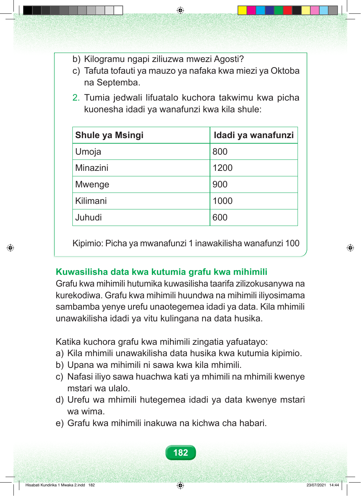

Swali sehemu b. Kilogramu ngapi ziliuzwa mwezi Agosti? Swali sehemu c. Tafuta tofauti ya mauzo ya nafaka kwa mwezi Oktoba na Septemba. na Septemba. Swali namba mbili. Tumia jedwali lifuatalo kuchora takwimu kwa picha kuonesha idadi ya wanafunzi kwa kila shule. kuonesha idadi ya wanafunzi kwa kila shule: Jedwali lina safu mbili: shule ya msingi, na idadi ya wanafunzi. Mstari wa kwanza. Shule ya Msingi Umoja ina wanafunzi mia nane. Mstari wa pili. Shule ya Msingi Minazini ina wanafunzi elfu moja mia mbili. Mstari wa tatu. Shule ya Msingi Mwenge ina wanafunzi mia tisa. Mstari wa nne. Shule ya Msingi Kilimani ina wanafunzi elfu moja. Mstari wa tano. Shule ya Msingi Juhudi ina wanafunzi mia sita. Kipimio: picha moja ya mwanafunzi inawakilisha wanafunzi mia moja. Kuwasilisha data kwa kutumia grafu kwa mihimili Grafu kwa mihimili hutumika kuwasilisha taarifa zilizokusanywa na kurekodiwa. Grafu kwa mihimili huundwa na mihimili iliyosimama sambamba yenye urefu unaotegemea idadi ya data. Kila mhimili unawakilisha idadi ya vitu kulingana na data husika. Katika kuchora grafu kwa mihimili zingatia yafuatayo: a) Kila mhimili unawakilisha data husika kwa kutumia kipimio. b) Upana wa mihimili ni sawa kwa kila mhimili. c) Nafasi iliyo sawa huachwa kati ya mhimili na mhimili kwenye mstari wa ulalo. d) Urefu wa mhimili hutegemea idadi ya data kwenye mstari wa wima. e) Grafu kwa mihimili inakuwa na kichwa cha habari. 182 Hisabati Kundirika 1 Mwaka 2.indd 182 23/07/2021 14:44